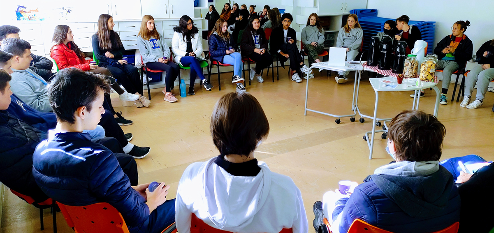

Notícia do Dia
Importância das Rodas de Conversa nas Escolas
As rodas de conversa têm se mostrado uma ferramenta valiosa no ambiente escolar, oferecendo um espaço de diálogo aberto entre alunos, professores e pais. Essas conversas são essenciais para abordar temas importantes, como a inclusão, o desenvolvimento social e emocional dos alunos, e a resolução de conflitos. No decorrer do ano letivo, as rodas de conversa ajudam a fortalecer a comunidade escolar, promovem a compreensão mútua e proporcionam uma plataforma para discutir e implementar melhorias na educação. Através desse formato, todos os envolvidos têm a oportunidade de compartilhar suas perspectivas e contribuir para um ambiente escolar mais colaborativo e inclusivo.